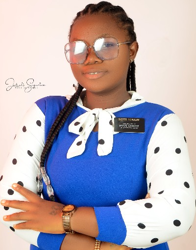

Bintu Lukulay WDD 130
Hello! My name is Bintu Lukulay, and I am from Kissy, Freetown. I come from a family of six and recently returned from my mission in Nigeria.
I am currently pursuing a degree in Software Development at BYU-Idaho. With a passion for technology and problem-solving, I hope to become an AI and frontend web developer working for companies around the globe.
Apart from coding, I love spending time exploring new recipes, experimenting with flavors in my kitchen, and sharing my creations with friends and family.
My ultimate goal is to become a software developer who not only writes code but also makes a difference through innovation.